Companion
Companion is the app that allows travelers to find medical needs by providing reassurance and guidance when they need medical advice abroad
When you're away from home, even a pharmacy can feel unfamiliar
Imagine feeling sick in a country where the medicine has a different name, the packaging is unfamiliar, and you don't speak the language. At home, you know what to reach for. Abroad, even a simple decision can turn into a long search.
That's where Companion began: a concept for a travel healthcare assistant that helps people feel less lost when they need medication or medical support outside their home country.
How might we make healthcare abroad feel less uncertain?
My research started with a simple question: how might we help travelers find the medical resources they need for a safer, less stressful trip?
I focused on three connected challenges
understanding unfamiliar medication, locating appropriate care,
and communicating essential health information in a new country
It isn't just about finding a medicine it's about feeling sure
I explored scenarios around travelers who feel sick and aren't sure what medicine to buy, worry about interactions with their usual medication, or struggle to explain their history to a local provider. Through personas, an empathy map, and a journey map, the moments that stood out were the moments of hesitation: Is this the right medicine? Is it safe for me? Where can I get help?
The product needed to do more than return search results. It needed to organize information in a way that feels familiar and helps travelers know what to ask next
Start helping before something goes wrong
Companion begins with trip preparation. A traveler selects a destination, chooses travel dates, and shares a few details about their trip and medications. The concept then offers a simple checklist for what to pack and consider before leaving.
I wanted the setup to feel like planning a trip, not filling out a complicated medical form
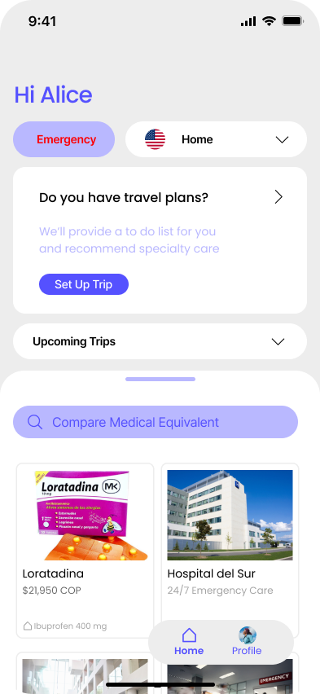
Home — a place to start
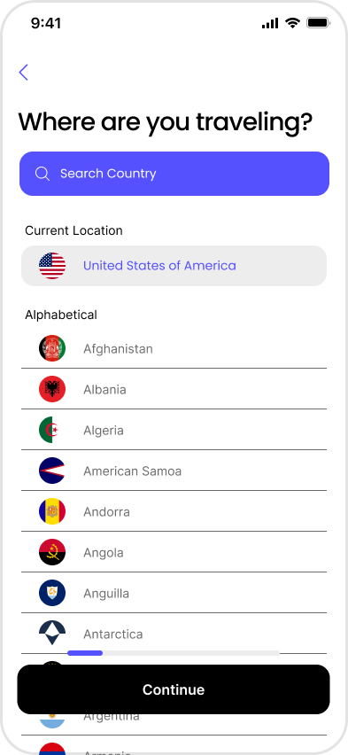
Choose a destination
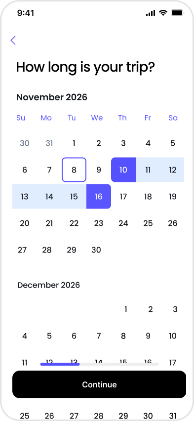
Add travel dates
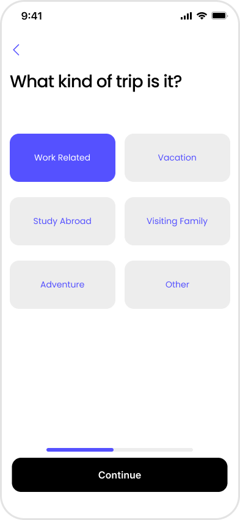
Define the trip
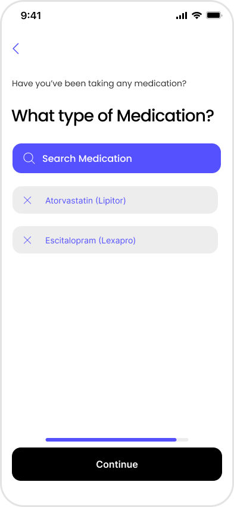
List current medication
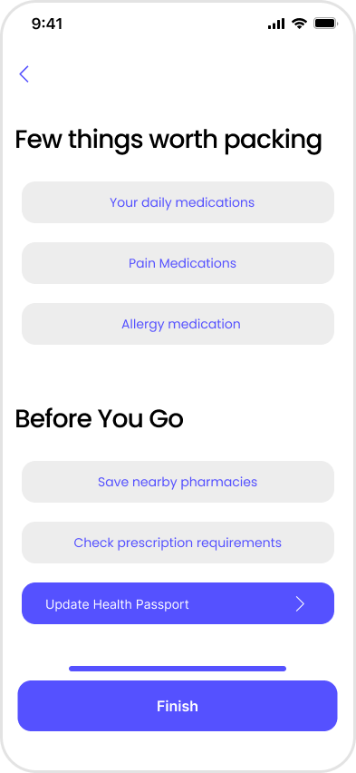
Pack and prepare
What if you could search for the medicine you already know?
The medicine comparison feature starts with a familiar product from home. Instead of making the traveler decode a local shelf from scratch, it presents possible local products side by side and makes the ingredient information easier to compare.
I built the visual language around recognizable packaging and highlighted active ingredients. Because availability, strengths, and regulations change across countries, the comparisons in this design are illustrative—not clinical advice or a claim that two products are interchangeable.
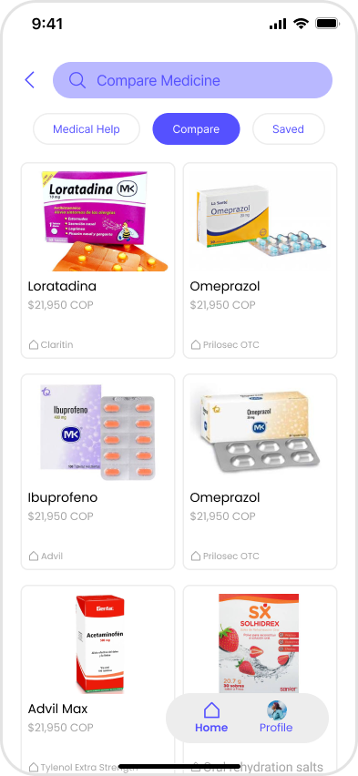
Browse by what feels familiar
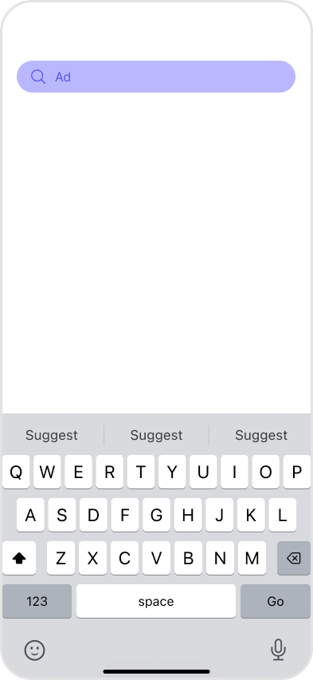
Search by the product you know
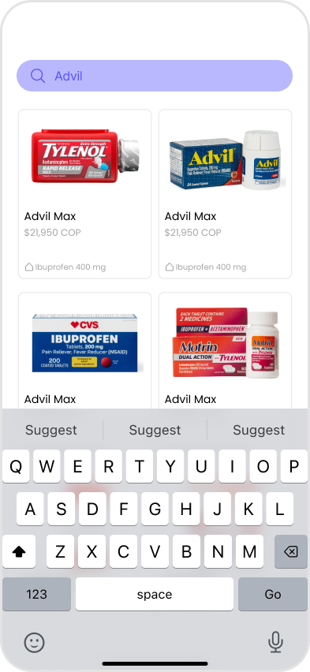
See possible matches
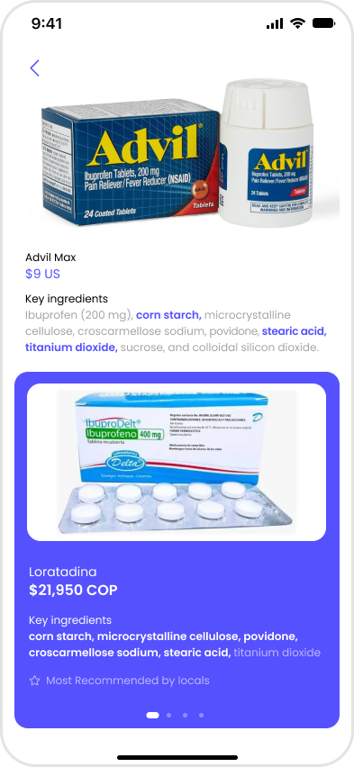
Compare product information
Not every answer comes from a pharmacy
Sometimes a traveler needs a hospital, clinic, or emergency care rather than a product comparison. The interface brings medical locations into the same browsing experience, with cards that can be saved for later.
Keeping medication and medical-help searches together makes Companion feel like one travel health resource, rather than several disconnected tools
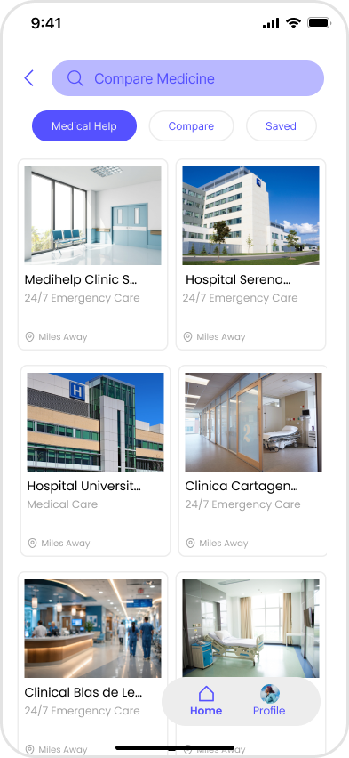
Browse nearby care options
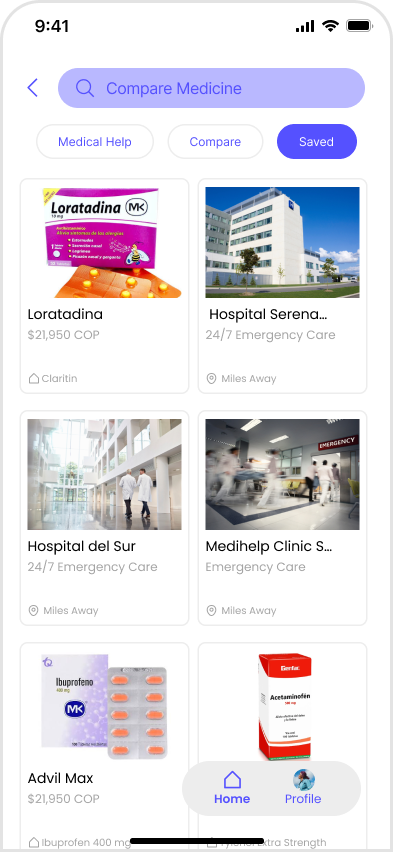
Keep useful places nearby
Some information is too important to get lost in translation
The third flow is a portable health passport: a compact record of medications, allergies, conditions, and emergency contacts designed to be easy to show when receiving care abroad.
I explored a language-switching view and an Apple Wallet entry point so travelers could reach their information quickly. The design demonstrates the intended experience; it isn't a live integration with hospitals or Apple Wallet.
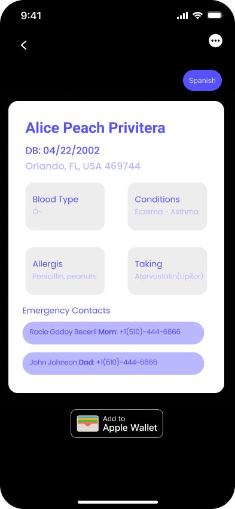
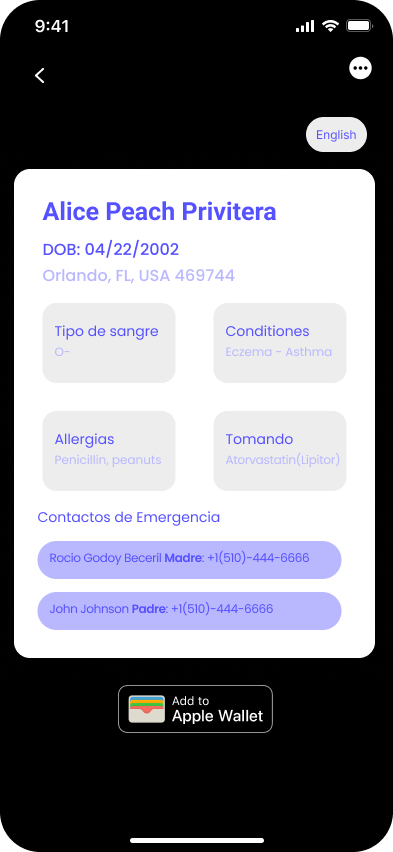
Finding a calmer experience
For the interface I paired an energetic violet with a minimal white and light-gray layout. I used rounded cards, clear headings, familiar lists, and product photography to make unfamiliar information feel easier to scan. Companion's star-shaped mark gives the app a recognizable identity across the interface.
From planning a trip to finding the right next step.
These previews show how the interface connects screens into a continuous journey. The priority was to keep important tasks close together: preparation, information, and access to care.
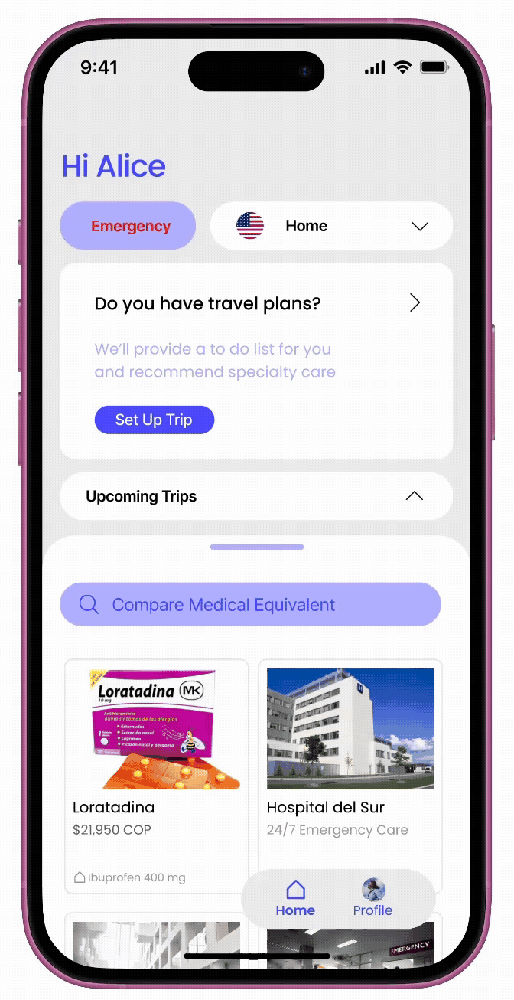
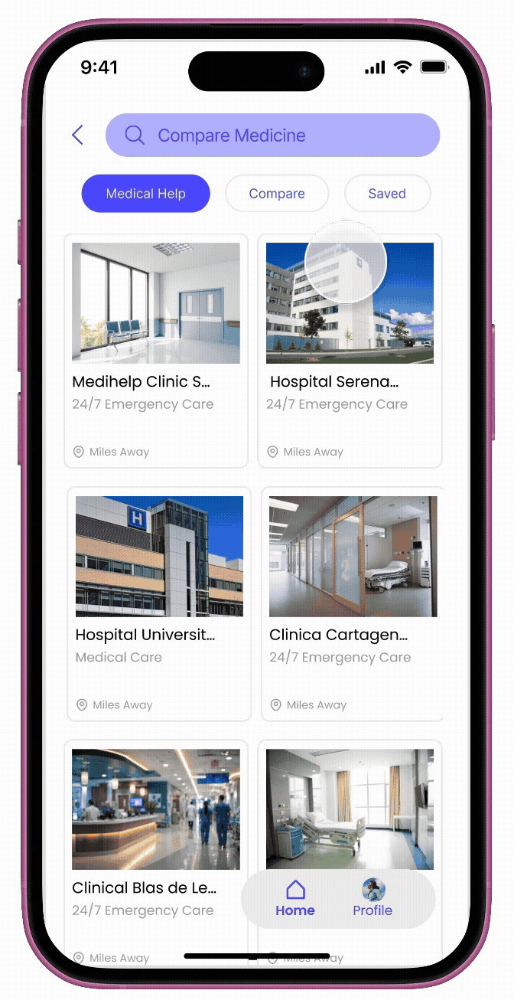
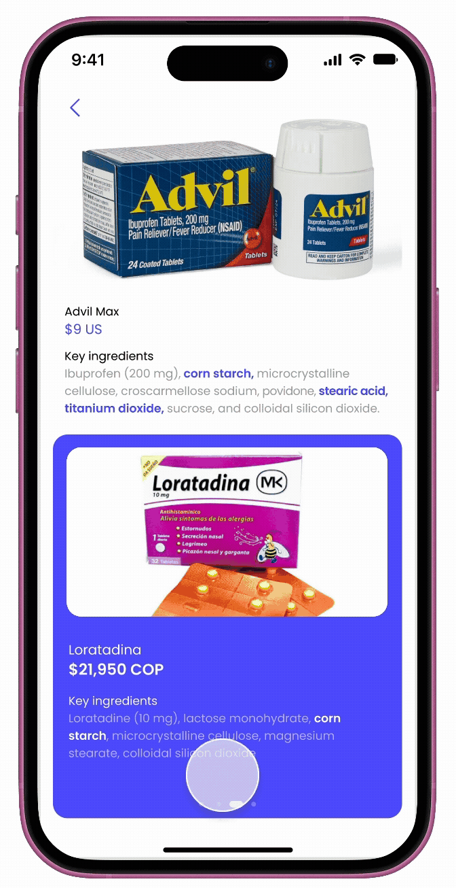
Confidence is part of care
Companion pushed me to think about design as more than arranging screens. A traveler might be tired, worried, in pain, or communicating in a second language. In those moments, clarity matters.
This project brings together my interest in UX, travel, and making complex information more approachable. It is a design concept shaped through user scenarios and prototype exploration—not a released medical product, verified medicine database, or tested clinical service. My next step would be usability testing with travelers and validation with healthcare professionals.